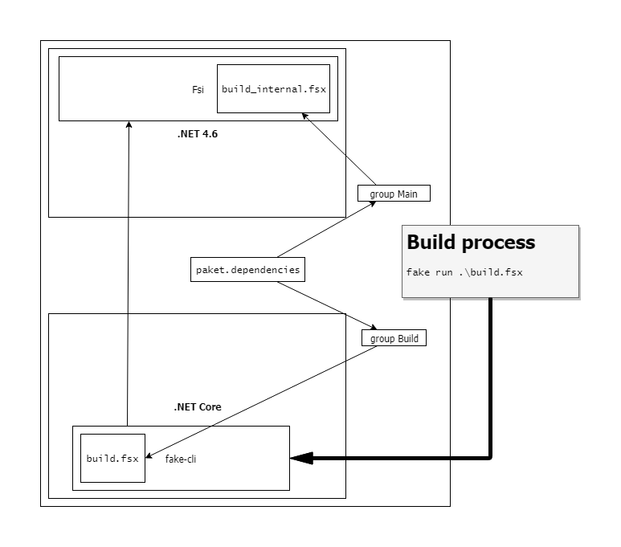

Test build script
1: 2: |
|
Setting this whole thing up:
- .NET Core and Fake CLI installed -> FAKE runs on .NET Core
- A build task that uses a .NET 4.6 library -> Fsharp.Formating runs on .NET 4.6
- Fake runs
build.fsxwhich usesfsiwith NetStandard to load and executebuild_internal.fsxand uses Fsharp.Formating
1: 2: 3: 4: 5: 6: 7: 8: 9: 10: |
|
If one of the "other" dependencies does not exist, everything fails...

All done!
namespace Fake
namespace Fake.Core
namespace Fake.DotNet
namespace Fake.IO
namespace Fake.IO.Globbing
module Operators
from Fake.IO.Globbing
from Fake.IO.Globbing
val buildDir : string
Full name: Build.buildDir
Full name: Build.buildDir
val buildDebug : options:DotNet.BuildOptions -> DotNet.BuildOptions
Full name: Build.buildDebug
Full name: Build.buildDebug
val options : DotNet.BuildOptions
module DotNet
from Fake.DotNet
from Fake.DotNet
type BuildOptions =
{Common: Options;
Configuration: BuildConfiguration;
Framework: string option;
Runtime: string option;
BuildBasePath: string option;
OutputPath: string option;
Native: bool;}
member WithCommon : f:(Options -> Options) -> BuildOptions
member WithEnvironment : map:Map<string,string> -> BuildOptions
member WithRedirectOutput : shouldRedirect:bool -> BuildOptions
member Environment : Map<string,string>
static member Create : unit -> BuildOptions
Full name: Fake.DotNet.DotNet.BuildOptions
{Common: Options;
Configuration: BuildConfiguration;
Framework: string option;
Runtime: string option;
BuildBasePath: string option;
OutputPath: string option;
Native: bool;}
member WithCommon : f:(Options -> Options) -> BuildOptions
member WithEnvironment : map:Map<string,string> -> BuildOptions
member WithRedirectOutput : shouldRedirect:bool -> BuildOptions
member Environment : Map<string,string>
static member Create : unit -> BuildOptions
Full name: Fake.DotNet.DotNet.BuildOptions
Multiple items
module BuildConfiguration
from Fake.DotNet.DotNet
--------------------
type BuildConfiguration =
| Debug
| Release
| Custom of string
override ToString : unit -> string
Full name: Fake.DotNet.DotNet.BuildConfiguration
module BuildConfiguration
from Fake.DotNet.DotNet
--------------------
type BuildConfiguration =
| Debug
| Release
| Custom of string
override ToString : unit -> string
Full name: Fake.DotNet.DotNet.BuildConfiguration
union case DotNet.BuildConfiguration.Debug: DotNet.BuildConfiguration
Multiple items
module Target
from Fake.Core
--------------------
type Target =
{Name: string;
Dependencies: string list;
SoftDependencies: string list;
Description: TargetDescription option;
Function: TargetParameter -> unit;}
member DescriptionAsString : TargetDescription
Full name: Fake.Core.Target
module Target
from Fake.Core
--------------------
type Target =
{Name: string;
Dependencies: string list;
SoftDependencies: string list;
Description: TargetDescription option;
Function: TargetParameter -> unit;}
member DescriptionAsString : TargetDescription
Full name: Fake.Core.Target
val create : name:string -> body:(TargetParameter -> unit) -> unit
Full name: Fake.Core.Target.create
Full name: Fake.Core.Target.create
Multiple items
module Shell
from Fake.IO
--------------------
type Shell =
private new : unit -> Shell
static member AsyncExec : cmd:string * ?args:string * ?dir:string -> Async<int>
static member Exec : cmd:string * ?args:string * ?dir:string -> int
static member private GetParams : cmd:string * ?args:string * ?dir:string -> ExecParams
Full name: Fake.Core.Shell
module Shell
from Fake.IO
--------------------
type Shell =
private new : unit -> Shell
static member AsyncExec : cmd:string * ?args:string * ?dir:string -> Async<int>
static member Exec : cmd:string * ?args:string * ?dir:string -> int
static member private GetParams : cmd:string * ?args:string * ?dir:string -> ExecParams
Full name: Fake.Core.Shell
val cleanDir : path:string -> unit
Full name: Fake.IO.Shell.cleanDir
Full name: Fake.IO.Shell.cleanDir
module Seq
from Microsoft.FSharp.Collections
from Microsoft.FSharp.Collections
val map : mapping:('T -> 'U) -> source:seq<'T> -> seq<'U>
Full name: Microsoft.FSharp.Collections.Seq.map
Full name: Microsoft.FSharp.Collections.Seq.map
val exec : buildOptions:(DotNet.Options -> DotNet.Options) -> command:string -> args:string -> ProcessResult
Full name: Fake.DotNet.DotNet.exec
Full name: Fake.DotNet.DotNet.exec
val id : x:'T -> 'T
Full name: Microsoft.FSharp.Core.Operators.id
Full name: Microsoft.FSharp.Core.Operators.id
val iter : action:('T -> unit) -> source:seq<'T> -> unit
Full name: Microsoft.FSharp.Collections.Seq.iter
Full name: Microsoft.FSharp.Collections.Seq.iter
val printfn : format:Printf.TextWriterFormat<'T> -> 'T
Full name: Microsoft.FSharp.Core.ExtraTopLevelOperators.printfn
Full name: Microsoft.FSharp.Core.ExtraTopLevelOperators.printfn
val build : setParams:(DotNet.BuildOptions -> DotNet.BuildOptions) -> project:string -> unit
Full name: Fake.DotNet.DotNet.build
Full name: Fake.DotNet.DotNet.build
val script : string
val exitcode : int
val msgs : string list
module Fsi
from Fake.DotNet
from Fake.DotNet
val exec : fsiParams:(Fsi.FsiParams -> Fsi.FsiParams) -> script:string -> scriptArgs:string list -> int * string list
Full name: Fake.DotNet.Fsi.exec
Full name: Fake.DotNet.Fsi.exec
val p : Fsi.FsiParams
type Profile =
| MsCorlib
| Netcore
| NetStandard
override ToString : unit -> string
Full name: Fake.DotNet.Fsi.Profile
| MsCorlib
| Netcore
| NetStandard
override ToString : unit -> string
Full name: Fake.DotNet.Fsi.Profile
union case Fsi.Profile.NetStandard: Fsi.Profile
module Process
from Fake.Core
from Fake.Core
val setEnvironmentVariable : envKey:string -> envVar:string -> startInfo:'a -> 'a (requires member get_Environment and member WithEnvironment)
Full name: Fake.Core.Process.setEnvironmentVariable
Full name: Fake.Core.Process.setEnvironmentVariable
module Trace
from Fake.Core
from Fake.Core
val trace : message:string -> unit
Full name: Fake.Core.Trace.trace
Full name: Fake.Core.Trace.trace
val sprintf : format:Printf.StringFormat<'T> -> 'T
Full name: Microsoft.FSharp.Core.ExtraTopLevelOperators.sprintf
Full name: Microsoft.FSharp.Core.ExtraTopLevelOperators.sprintf
module TargetOperators
from Fake.Core
from Fake.Core
val runOrDefault : defaultTarget:string -> unit
Full name: Fake.Core.Target.runOrDefault
Full name: Fake.Core.Target.runOrDefault